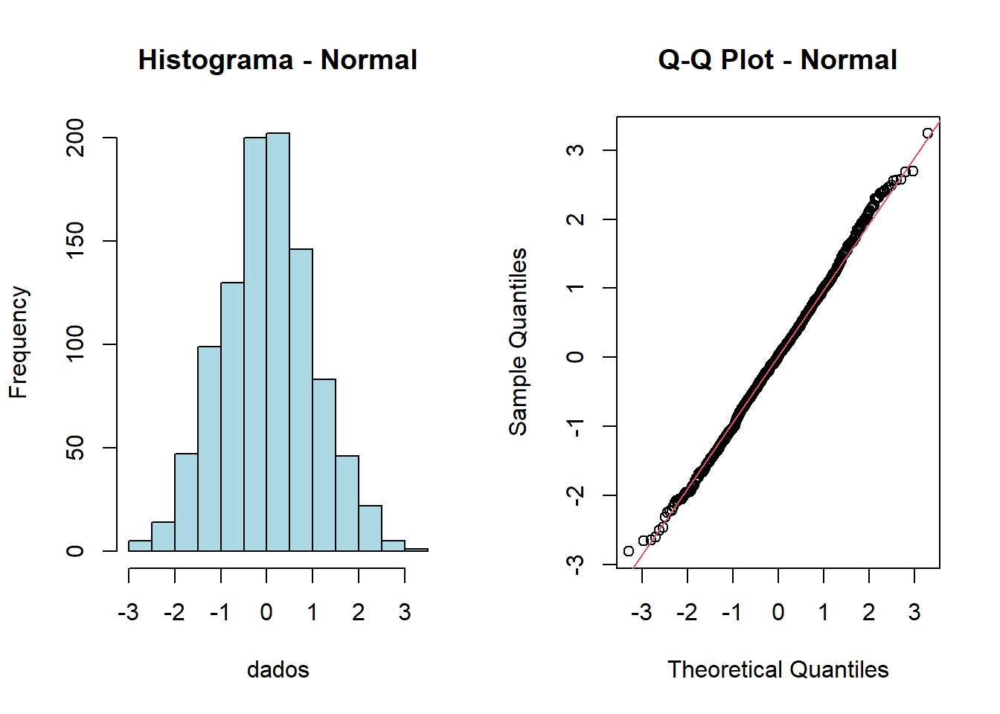
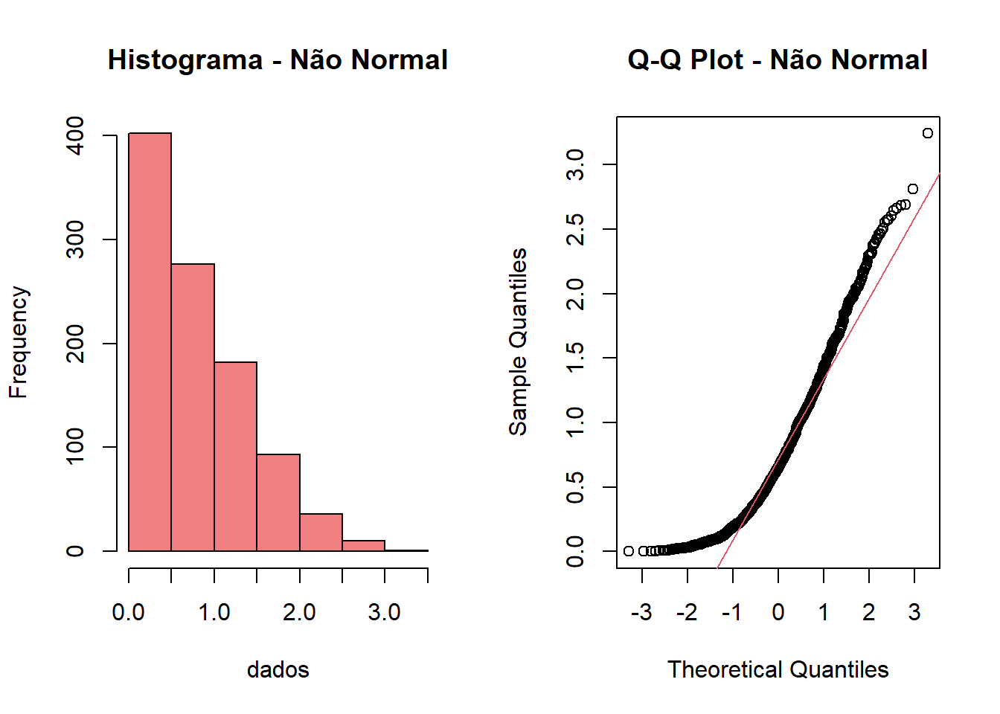
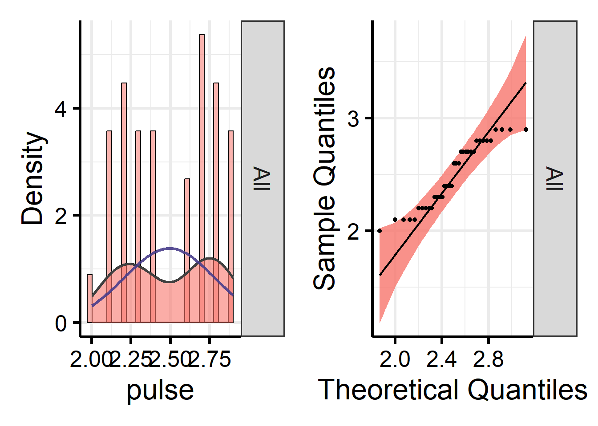

# Modelagem e análise
library(lme4) # Modelos lineares mistos
library(nlme) # Modelos não-lineares mistos
library(geepack) # Equações de estimação generalizadas
# Médias e comparações
library(emmeans) # Médias estimadas marginais
library(multcomp) # Comparações múltiplas
library(effects) # Visualização de efeitos
# Estatísticas e diagnósticos
library(performance) # Diagnósticos de modelos
library(sjstats) # Estatísticas descritivas
library(rstatix) # Análises simplificadas
library(car) # Testes complementares
# Manipulação de dados
library(dplyr) # Transformação de dados
library(tidyr) # Organização de dados
library(foreign) # Importação SPSS/Stata
# Visualização
library(flexplot) # Gráficos flexíveis
library(see) # Visualizações do easystats
# Suites integradas
library(easystats) # Suite completa de análise
library(rempsyc) # Métodos psicométricosModelos Lineares
📊 Os Quatro Modelos
Modelo Linear Geral de Medidas Repetidas
Extensão do modelo linear tradicional projetado especificamente para dados com observações correlacionadas ao longo do tempo.
Quando usar: - Estudos longitudinais com medições repetidas - Mesmos participantes avaliados em múltiplos momentos - Necessidade de modelar estrutura de covariância entre medições
Exemplo prático: Acompanhamento de pacientes em tratamento médico, medindo regularmente biomarcadores para observar mudanças ao longo do tempo.
Generalized Estimated Equations
Abordagem robusta para dados longitudinais que fornece estimativas eficientes mesmo quando a especificação da covariância não é perfeita.
Quando usar: - Estudos observacionais longitudinais - Ensaios clínicos com medições correlacionadas - Estudos epidemiológicos multicêntricos
Exemplo prático: Investigação da eficácia de programa de intervenção em saúde onde observações estão correlacionadas dentro de grupos de participantes.
Modelos Mistos e Hierárquicos
Combinam componentes fixos e aleatórios, ideais para dados com estrutura hierárquica ou multicêntrica.
Quando usar: - Dados com estrutura hierárquica - Estudos multicêntricos - Observações agrupadas em diferentes níveis
Exemplo prático: Avaliação de desempenho acadêmico onde alunos (nível 1) estão agrupados em salas (nível 2) e escolas (nível 3), considerando efeitos individuais e contextuais.
Generalized Linear Models
Extensão dos modelos lineares para variáveis resposta não-normais, permitindo diferentes distribuições e funções de ligação.
Quando usar: - Dados de contagem (Poisson) - Dados binários (Logística) - Dados com distribuição não-normal
Exemplo prático: Análise de número de eventos adversos (contagem) em ensaio clínico ou modelagem de probabilidade de sucesso em tratamento (binário).
🎯 Por que usar Modelos de Medidas Repetidas?
Vantagens sobre ANOVA Tradicional
Os modelos lineares modernos oferecem melhorias substanciais sobre a ANOVA clássica:
- Modelagem Flexível
- Múltiplos fatores independentes em um único modelo
- Análise de interações complexas
- Estruturas de covariância personalizadas
- Robustez a Violações
- Dados desequilibrados
- Heterogeneidade de variâncias
- Desvios da normalidade
- Controle Estatístico
- Inclusão de covariáveis
- Ajuste para variáveis confundidoras
- Maior precisão nas estimativas
- Poder Estatístico
- Aproveitamento da correlação entre medidas
- Detecção de efeitos com amostras menores
- Análise eficiente de designs complexos
- Versatilidade
- Variáveis dependentes contínuas ou categóricas
- Diferentes distribuições de probabilidade
- Estruturas temporais variadas
📦 Pacotes Necessários
📥 Materiais para Download
Arquivos Necessários
Faça o download do pacote completo abaixo e descompacte todos os arquivos na pasta do seu projeto.
Conteúdo do pacote:
bd_New drug_respiratory&pulse.sav- Banco de dados principalLista 1.R- Script parcialmente preenchido para práticalista_1.docx- Exercícios para resolução
🔄 Preparação dos Dados
Carregamento Inicial
# Importar dados do SPSS
original_wide <- read.spss("bd_New drug_respiratory&pulse.sav",
to.data.frame = TRUE)
# Visualizar estrutura
head(original_wide) drug resp1 resp2 resp3 pulse1 pulse2 pulse3
1 New Drug 3.4 3.3 3.3 2.2 2.1 2.1
2 New Drug 3.4 3.4 3.3 2.2 2.1 2.2
3 New Drug 3.3 3.4 3.4 2.3 2.4 2.3
4 New Drug 3.4 3.4 3.4 2.3 2.4 2.3
5 New Drug 3.3 3.4 3.3 2.2 2.2 2.4
6 New Drug 3.3 3.3 3.3 2.0 2.1 2.4
Sobre a função
read.spss()
- Origem: Pacote
foreign - Parâmetro
to.data.frame = TRUE: Converte para data frame do R - Alternativa: Pacote
havencomread_sav()(mais moderno)
Transformação Wide → Long
Para análises de medidas repetidas, precisamos converter os dados de formato wide (uma linha por sujeito) para long (uma linha por observação).
Passo 1: Renomear Colunas
bd <- original_wide %>%
rename_with(~gsub("(resp|pulse)(\\d+)", "\\1_\\2", .), -drug) %>%
mutate(ID = row_number()) %>%
select(ID, everything())
head(bd) ID drug resp_1 resp_2 resp_3 pulse_1 pulse_2 pulse_3
1 1 New Drug 3.4 3.3 3.3 2.2 2.1 2.1
2 2 New Drug 3.4 3.4 3.3 2.2 2.1 2.2
3 3 New Drug 3.3 3.4 3.4 2.3 2.4 2.3
4 4 New Drug 3.4 3.4 3.4 2.3 2.4 2.3
5 5 New Drug 3.3 3.4 3.3 2.2 2.2 2.4
6 6 New Drug 3.3 3.3 3.3 2.0 2.1 2.4
🔍 Entendendo a Expressão Regular
A regex (resp|pulse)(\\d+) funciona assim:
(resp|pulse)- Captura “resp” OU “pulse”(\\d+)- Captura um ou mais dígitos
Transformação: - resp1 → resp_1 - pulse2 → pulse_2
Isso facilita a separação posterior em variável e tempo!
Passo 2: Pivotar para Formato Long
bd_long <- pivot_longer(
bd,
cols = resp_1:pulse_3,
names_to = c(".value", "Tempo"),
names_pattern = "(.+)_(.+)"
)
head(bd_long)# A tibble: 6 × 5
ID drug Tempo resp pulse
<int> <fct> <chr> <dbl> <dbl>
1 1 New Drug 1 3.4 2.2
2 1 New Drug 2 3.3 2.1
3 1 New Drug 3 3.3 2.1
4 2 New Drug 1 3.4 2.2
5 2 New Drug 2 3.4 2.1
6 2 New Drug 3 3.3 2.2
Estrutura do
pivot_longer()
cols: Colunas a transformar.value: Nome da coluna vem da primeira parteTempo: Criada da segunda parte do nomenames_pattern: Regex para dividir nomes
Passo 3: Converter Tempo em Fator
bd_long$Tempo <- factor(bd_long$Tempo)✅ Verificação de Pressupostos
Normalidade da Variável Dependente
A distribuição normal é pressuposto fundamental em muitos testes estatísticos.
set.seed(123)
dados_normais <- rnorm(1000, mean = 0, sd = 1)
# Criar visualizações
par(mfrow = c(1, 2))
# Histograma
hist(dados_normais,
main = "Distribuição Normal",
col = "lightblue",
border = "black")
# Q-Q Plot
qqnorm(dados_normais, main = "Q-Q Plot - Normal")
qqline(dados_normais, col = "red", lwd = 2)
par(mfrow = c(1, 1))Características: - Histograma em forma de sino - Q-Q plot segue linha diagonal - Simetria em torno da média
set.seed(123)
dados_nao_normais <- abs(rnorm(1000, mean = 0, sd = 1))
par(mfrow = c(1, 2))
hist(dados_nao_normais,
main = "Distribuição Assimétrica",
col = "lightcoral",
border = "black")
qqnorm(dados_nao_normais, main = "Q-Q Plot - Não Normal")
qqline(dados_nao_normais, col = "red", lwd = 2)
par(mfrow = c(1, 1))Características: - Assimetria evidente - Desvios da linha no Q-Q plot - Concentração em uma região
Teste de Shapiro-Wilk
Hipóteses do Teste
H₀: Os dados seguem distribuição normal
H₁: Os dados NÃO seguem distribuição normal
Decisão: - p > 0,05 → Não rejeita H₀ (assume normalidade) - p < 0,05 → Rejeita H₀ (evidência de não-normalidade)
⚠️ Atenção: Com amostras muito grandes, pequenos desvios podem ser significativos.
Exemplo com dados normais:
shapiro.test(dados_normais)
Shapiro-Wilk normality test
data: dados_normais
W = 0.99838, p-value = 0.4765Exemplo com dados não-normais:
shapiro.test(dados_nao_normais)
Shapiro-Wilk normality test
data: dados_nao_normais
W = 0.92344, p-value < 2.2e-16Normalidade das Variáveis do Estudo
Variável “Pulse”
# Visualização combinada
nice_normality(
data = bd_long,
variable = "pulse",
histogram = TRUE
)
# Teste formal
shapiro.test(bd_long$pulse)
Shapiro-Wilk normality test
data: bd_long$pulse
W = 0.90791, p-value = 0.005655
Interpretação
Tanto a análise gráfica quanto o teste de Shapiro-Wilk indicam que pulse não possui distribuição normal.
🔄 Esfericidade (Medidas Repetidas)
O que é Esfericidade?
A esfericidade avalia se as variâncias das diferenças entre todos os pares de medidas repetidas são homogêneas.
Violação de esfericidade: - Infla erro Tipo I (falsos positivos) - Requer correções nos graus de liberdade - Comum em medidas repetidas
Teste de Mauchly para “Pulse”
pulse_mauchly <- anova_test(
data = bd_long,
dv = pulse,
wid = ID,
within = Tempo
)
pulse_mauchlyANOVA Table (type III tests)
$ANOVA
Effect DFn DFd F p p<.05 ges
1 Tempo 2 22 3.48 0.049 * 0.024
$`Mauchly's Test for Sphericity`
Effect W p p<.05
1 Tempo 0.781 0.29
$`Sphericity Corrections`
Effect GGe DF[GG] p[GG] p[GG]<.05 HFe DF[HF] p[HF] p[HF]<.05
1 Tempo 0.82 1.64, 18.04 0.061 0.945 1.89, 20.78 0.052
📊 Interpretando os Resultados
ANOVA Table: - F = 3,48, p = 0,049 → Efeito significativo de Tempo - ges = medida de tamanho de efeito
Teste de Mauchly: - W = 0,781, p = 0,29 → Esfericidade NÃO violada
Correções (quando necessárias): - GGe = 0,82 → Correção de Greenhouse-Geisser - HFe = 0,945 → Correção de Huynh-Feldt
Teste de Mauchly para “Resp”
resp_mauchly <- anova_test(
data = bd_long,
dv = resp,
wid = ID,
within = Tempo
)
resp_mauchlyANOVA Table (type III tests)
$ANOVA
Effect DFn DFd F p p<.05 ges
1 Tempo 2 22 0.344 0.713 0.01
$`Mauchly's Test for Sphericity`
Effect W p p<.05
1 Tempo 0.501 0.032 *
$`Sphericity Corrections`
Effect GGe DF[GG] p[GG] p[GG]<.05 HFe DF[HF] p[HF] p[HF]<.05
1 Tempo 0.667 1.33, 14.68 0.629 0.725 1.45, 15.94 0.646
⚠️ Esfericidade Violada!
Teste de Mauchly: - W = 0,501, p < 0,05 → Esfericidade VIOLADA
Implicações: - Graus de liberdade devem ser corrigidos - Usar valores p corrigidos (GGe ou HFe) - GGe = 0,667 (redução de ~33%) - HFe = 0,725 (redução de ~27,5%)
Resultado após correção: - Efeito de Tempo permanece não-significativo
🔧 Coeficientes de Correção
Características: - Correção mais conservadora - Recomendado quando GGe < 0,75 - Reduz graus de liberdade proporcionalmente
Interpretação: - GGe próximo de 1 → Pouca violação - GGe < 0,75 → Violação substancial
Exemplo (Resp): - GGe = 0,667 → Redução de 33% nos GL
Características: - Menos conservador que GGe - Melhor para amostras pequenas - Pode exceder 1 (truncado em 1)
Interpretação: - HFe próximo de 1 → Pouca violação - Diferença com GGe indica severidade
Exemplo (Resp): - HFe = 0,725 → Redução de 27,5% nos GL
| Situação | Recomendação |
|---|---|
| GGe > 0,75 | Qualquer correção |
| GGe < 0,75 | Preferir GGe |
| Amostra pequena | Considerar HFe |
| p próximo de 0,05 | Comparar ambos |
🎓 Resumo dos Pressupostos
Checklist de Verificação
| Pressuposto | Pulse | Resp | Ação |
|---|---|---|---|
| Normalidade | ❌ Violado | - | Considerar transformação ou GLM robusto |
| Esfericidade | ✅ OK | ❌ Violado | Usar correções GGe/HFe |
| Homogeneidade | - | - | Verificar com Levene (próximo capítulo) |
Próximos passos: Agora que verificamos os pressupostos, podemos prosseguir para as análises GLM, GEE e GMM!
📚 Conceitos-Chave
Glossário Rápido
Wide vs Long: - Wide: Uma linha por sujeito, múltiplas colunas de tempo - Long: Uma linha por observação, coluna de tempo
Esfericidade: - Homogeneidade das variâncias das diferenças - Crítico para ANOVA de medidas repetidas
GGe/HFe: - Correções para violação de esfericidade - Ajustam graus de liberdade
Q-Q Plot: - Quantis observados vs esperados - Linha diagonal = normalidade perfeita
🚀 Pronto para Análises!
Com os dados preparados e pressupostos verificados, você está pronto para explorar:
- GLM - Modelo Linear Geral
- GEE - Equações de Estimação Generalizadas
- GMM - Modelos Mistos
- GzLM - Modelos Lineares Generalizados
Siga para os próximos capítulos onde implementaremos cada modelo em detalhe!